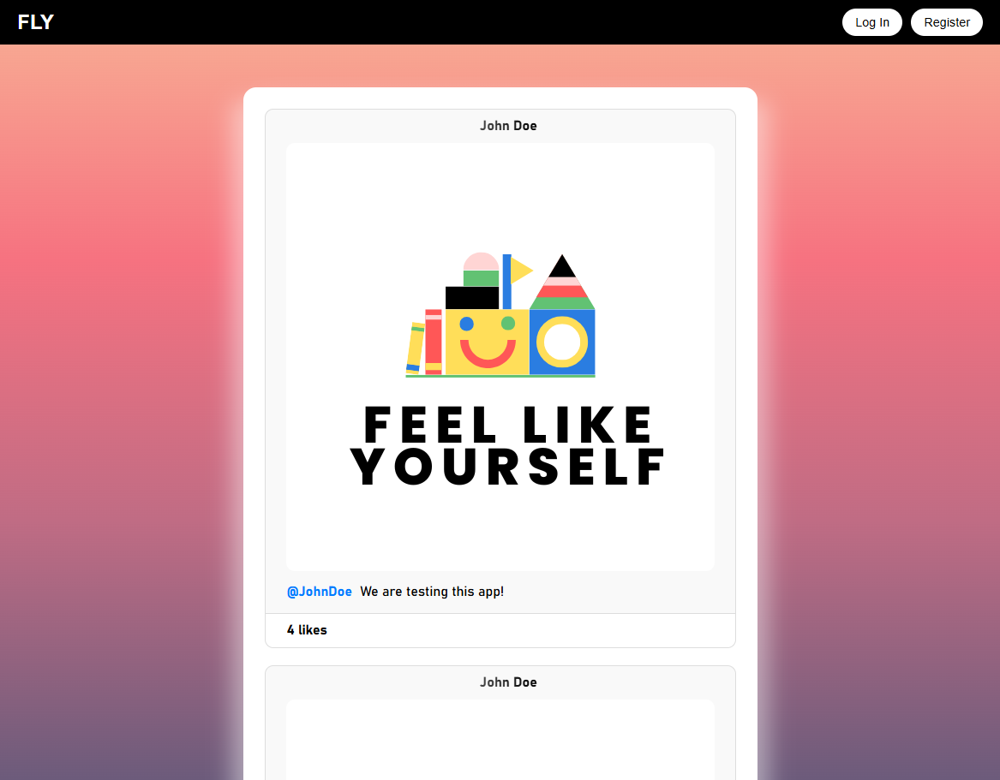
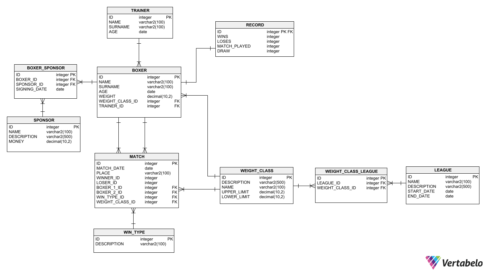

I'm a Computer Science student at the Polish-Japanese Academy of Information Technology, currently specializing in database systems. I enjoy designing clean and efficient backends using C# (ASP.NET Core) and Node.js, and have experience with Java, Python, and SQL through both coursework and personal projects. I've worked on projects like a social media platform, a multilingual typing game, and a boxing club database and many others. Recently, I’ve been diving into Jetpack Compose to expand my skills in Android development. I'm driven by a passion for solving real problems with code and always eager to learn something new.
Technology stack :>


PROJECTS

FLY (Feel Like Yourself) is a full-stack social media platform built using ASP.NET Core (C#), Node.js,
EJS, JavaScript, and CSS, with SQL Server for data management. It features secure user authentication,
post creation with image upload, emoji-based reactions, and admin moderation tools. The platform offers
a clean, responsive UI and demonstrates effective integration of backend services and frontend
rendering.

A boxing-focused membership and training management system built with Microsoft SQL Server and Oracle
SQL. It features boxer and trainer registration, weight class assignment, match and record tracking,
sponsorship management, and league organization. The system includes complex stored procedures and
triggers to automate training assignments, enforce business rules, and maintain data consistency.